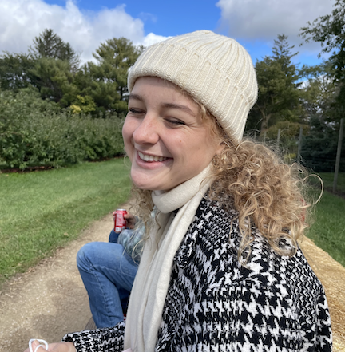

Hi, I'm Paige (she/her) and welcome to my website!

I created this website to be a publicly accessible repository of my research and personal projects. I'm excited to have this platform to share my work and life with you.
Here's a bit about me, academically:
- I am starting my PhD program in Biostatistics this fall at the University of Washington. You can read about my application process under the Posts section.
- I received my Bachelor of Arts in Applied Mathematics and Statistics from Macalester College (Twin Cities, MN) in 2024. My minors were Anthropology and Community & Global Health.
- While at Macalester, I completed an Honors project using causal inference in professional soccer data.
- I just finished a year as a research fellow in the Durham-Chapel Hill area, where my research used longitudinal modeling to look at associations between puberty and cancer.
- My CV has more information, if you're curious.
A bit more about me, outside of math:
- I'm from the Seattle area in Washington, so this summer, I'll be moving back home for the first time in 5 years.
- I love reading, running, and resting: my big 3!
- I have had more free time this past year, so I have challenged myself to pick up books and genres that I normally would not read (i.e., Straight by Dick Francis).
- I started running about 2 years ago after playing soccer all of my life. I'm planning to run my first half marathon this fall in Seattle!
- And resting is resting, self-explanatory. I love laying in the sun or in my bed with my orange cat, Goose.
- I also love to do yoga, try new food + recipes, and drink good coffee.
Links and Contact
If you're interested in my research or have any questions, feel free to contact me.